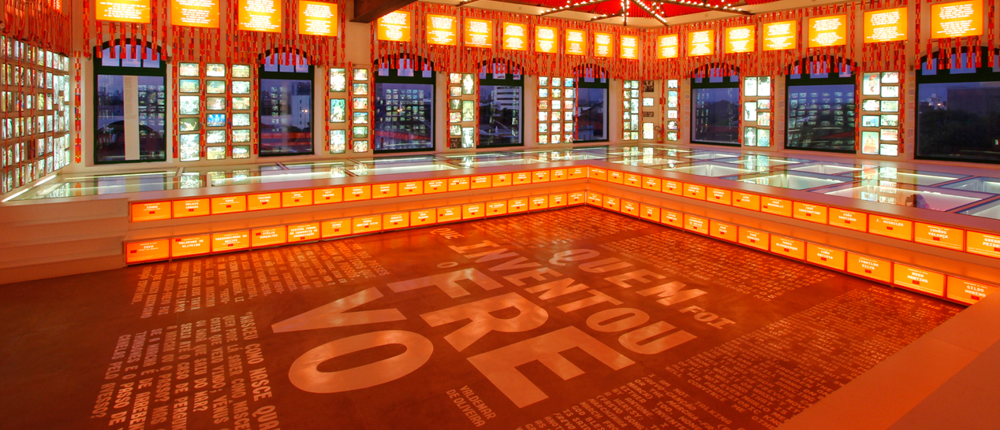
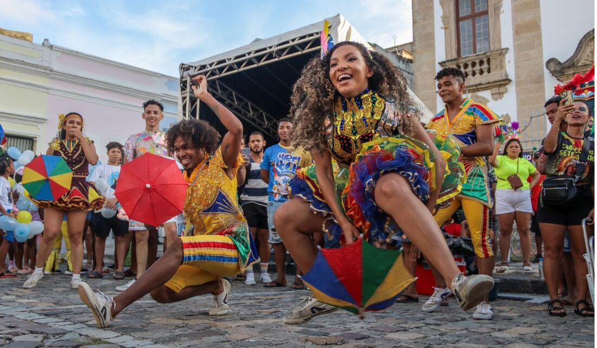
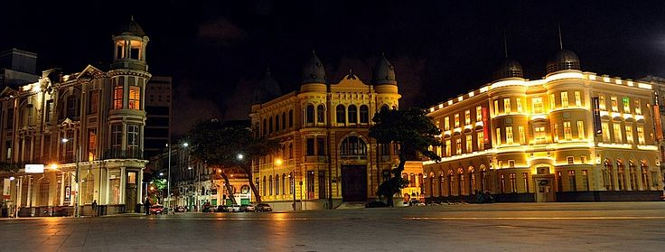
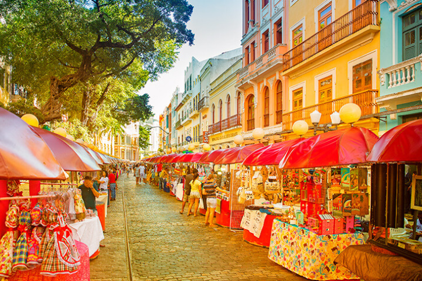

1. Sala das Agremiações (Paço do Frevo)
No último andar do museu, um espaço mágico e iluminado exibe os estandartes originais dos clubes e blocos tradicionais de Pernambuco, com vista panorâmica para o casario histórico e o mar.

Conheça e viva a cultura carnavalesca de Pernambuco!
Localizado no coração do Bairro do Recife, o Paço do Frevo é um centro cultural dedicado à salvaguarda, pesquisa e difusão do frevo, ritmo e dança reconhecidos como Patrimônio Imaterial da Humanidade pela UNESCO. Instalado em um histórico edifício de 1908, o espaço oferece aos visitantes uma experiência imersiva e interativa por meio de exposições, oficinas de música e dança, registros históricos e apresentações ao vivo que celebram a energia, as cores e a rica memória viva do Carnaval de Pernambuco durante todo o ano.

Além de mergulhar na história do ritmo mais vibrante do Brasil dentro do museu, a visita ao Bairro do Recife reserva encontros únicos com a arquitetura histórica, a arte contemporânea e a gastronomia típica da capital pernambucana.
No último andar do museu, um espaço mágico e iluminado exibe os estandartes originais dos clubes e blocos tradicionais de Pernambuco, com vista panorâmica para o casario histórico e o mar.

Localizada a poucos metros do museu, a praça principal da cidade é o ponto de partida das rodovias do estado, cercada pelo estuário do porto e pelas esculturas de Francisco Brennand ao fundo.

Eleita uma das ruas mais bonitas do mundo, reúne casarios coloridos do período holandês, feiras de artesanato aos domingos e a primeira sinagoga das Américas (Kahal Zur Israel).
